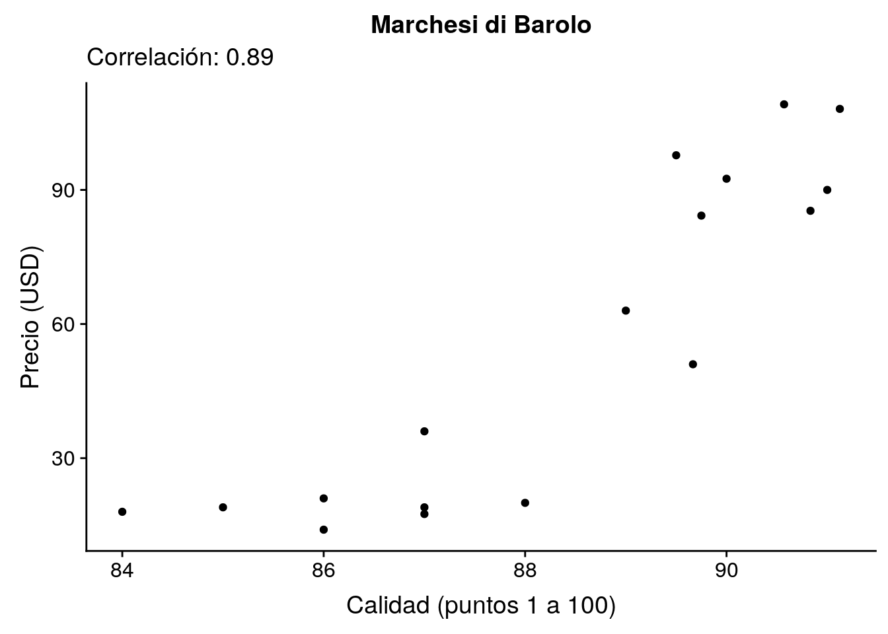
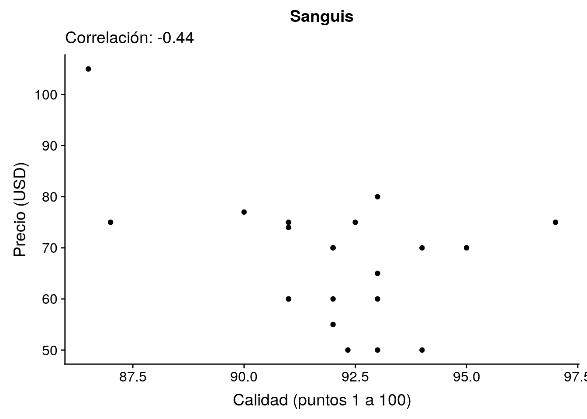

2019-06-12-vinos
John Blischak
2019-06-12
Last updated: 2019-06-20
Checks: 7 0
Knit directory: wflow-datos-de-miercoles/
This reproducible R Markdown analysis was created with workflowr (version 1.4.0). The Checks tab describes the reproducibility checks that were applied when the results were created. The Past versions tab lists the development history.
Great! Since the R Markdown file has been committed to the Git repository, you know the exact version of the code that produced these results.
Great job! The global environment was empty. Objects defined in the global environment can affect the analysis in your R Markdown file in unknown ways. For reproduciblity it’s best to always run the code in an empty environment.
The command set.seed(20190612) was run prior to running the code in the R Markdown file. Setting a seed ensures that any results that rely on randomness, e.g. subsampling or permutations, are reproducible.
Great job! Recording the operating system, R version, and package versions is critical for reproducibility.
Nice! There were no cached chunks for this analysis, so you can be confident that you successfully produced the results during this run.
Great job! Using relative paths to the files within your workflowr project makes it easier to run your code on other machines.
Great! You are using Git for version control. Tracking code development and connecting the code version to the results is critical for reproducibility. The version displayed above was the version of the Git repository at the time these results were generated.
Note that you need to be careful to ensure that all relevant files for the analysis have been committed to Git prior to generating the results (you can use wflow_publish or wflow_git_commit). workflowr only checks the R Markdown file, but you know if there are other scripts or data files that it depends on. Below is the status of the Git repository when the results were generated:
Ignored files:
Ignored: .Rhistory
Ignored: .Rproj.user/
Untracked files:
Untracked: analysis/2019-06-19-leyes.Rmd
Untracked: data/cambios.csv
Untracked: data/leyes.csv
Note that any generated files, e.g. HTML, png, CSS, etc., are not included in this status report because it is ok for generated content to have uncommitted changes.
These are the previous versions of the R Markdown and HTML files. If you’ve configured a remote Git repository (see ?wflow_git_remote), click on the hyperlinks in the table below to view them.
| File | Version | Author | Date | Message |
|---|---|---|---|---|
| Rmd | a158430 | John Blischak | 2019-06-20 | Actualiza el análisis de vinos. |
| html | aa57891 | John Blischak | 2019-06-13 | Build site. |
| Rmd | 8115b8a | John Blischak | 2019-06-13 | La correlación entre calidad y precio por viña. |
| html | d55cbc1 | John Blischak | 2019-06-12 | Build site. |
| Rmd | fc40bd1 | John Blischak | 2019-06-12 | empezar |
Introducción
Preparación
library(tidyverse)
library(cowplot)
theme_set(theme_cowplot())vinos <- read_csv("data/vinos.csv", col_types = "cciicccccc")Exploración
head(vinos)# A tibble: 6 x 10
pais nombre puntos precio provincia region_1 region_2 variedad vina
<chr> <chr> <int> <int> <chr> <chr> <chr> <chr> <chr>
1 Ital… Vulkà… 87 NA Sicily &… Etna <NA> Ensambl… Nico…
2 Port… Avida… 87 15 Douro <NA> <NA> Portugu… Quin…
3 Esta… <NA> 87 14 Oregon Willame… Willame… Pinot G… Rain…
4 Esta… Reser… 87 13 Michigan Lake Mi… <NA> Riesling St. …
5 Esta… Vintn… 87 65 Oregon Willame… Willame… Pinot N… Swee…
6 Espa… Ars I… 87 15 Northern… Navarra <NA> Tempran… Tand…
# … with 1 more variable: titulo_resena <chr>plot(vinos$puntos, vinos$precio)
| Version | Author | Date |
|---|---|---|
| aa57891 | John Blischak | 2019-06-13 |
dim(vinos)[1] 129971 10unique(vinos$pais) [1] "Italia" "Portugal" "Estados Unidos"
[4] "España" "Francia" "Alemania"
[7] "Argentina" "Chile" "Australia"
[10] "Austria" "Sudáfrica" "Nueva Zelanda"
[13] "Israel" "Hungría" "Grecia"
[16] "Rumania" "México" "Canadá"
[19] NA "Turquía" "República Checa"
[22] "Eslovenia" "Luxemburgo" "Croacia"
[25] "Georgia" "Uruguay" "Inglaterra"
[28] "Líbano" "Serbia" "Brazil"
[31] "Moldavia" "Marruecos" "Perú"
[34] "India" "Bulgaria" "Chipre"
[37] "Armenia" "Suiza" "Bosnia y Herzegovina"
[40] "Ucrania" "Eslovaquia" "Macedonia"
[43] "China" "Egipto" head(vinos$titulo_resena)[1] "Nicosia 2013 Vulkà Bianco (Etna)"
[2] "Quinta dos Avidagos 2011 Avidagos Red (Douro)"
[3] "Rainstorm 2013 Pinot Gris (Willamette Valley)"
[4] "St. Julian 2013 Reserve Late Harvest Riesling (Lake Michigan Shore)"
[5] "Sweet Cheeks 2012 Vintner's Reserve Wild Child Block Pinot Noir (Willamette Valley)"
[6] "Tandem 2011 Ars In Vitro Tempranillo-Merlot (Navarra)" País de origen
head(vinos$pais)[1] "Italia" "Portugal" "Estados Unidos" "Estados Unidos"
[5] "Estados Unidos" "España" length(unique(vinos$pais))[1] 44table(vinos$pais, useNA = "ifany")
Alemania Argentina Armenia
2165 3800 2
Australia Austria Bosnia y Herzegovina
2329 3345 2
Brazil Bulgaria Canadá
52 141 257
Chile China Chipre
4472 1 11
Croacia Egipto Eslovaquia
73 1 1
Eslovenia España Estados Unidos
87 6645 54504
Francia Georgia Grecia
22093 86 466
Hungría India Inglaterra
146 9 74
Israel Italia Líbano
505 19540 35
Luxemburgo Macedonia Marruecos
6 12 28
México Moldavia Nueva Zelanda
70 59 1419
Perú Portugal República Checa
16 5691 12
Rumania Serbia Sudáfrica
120 12 1401
Suiza Turquía Ucrania
7 90 14
Uruguay <NA>
109 63 sum(table(vinos$pais) > 1000)[1] 12sum(is.na(vinos$pais))[1] 63Nombre del vino
head(vinos$nombre)[1] "Vulkà Bianco"
[2] "Avidagos"
[3] NA
[4] "Reserve Late Harvest"
[5] "Vintner's Reserve Wild Child Block"
[6] "Ars In Vitro" length(unique(vinos$nombre))[1] 37980# Cuantos vinos con más que 5 reseñas?
sum(table(vinos$nombre) > 5)[1] 1995sum(is.na(vinos$nombre))[1] 37465Puntos con que fue calificado (escala de 1 a 100)
head(vinos$puntos)[1] 87 87 87 87 87 87summary(vinos$puntos) Min. 1st Qu. Median Mean 3rd Qu. Max.
80.00 86.00 88.00 88.45 91.00 100.00 hist(vinos$puntos)
| Version | Author | Date |
|---|---|---|
| aa57891 | John Blischak | 2019-06-13 |
stopifnot(is.integer(vinos$puntos))
sum(is.na(vinos$puntos))[1] 0Precio de la botella (en dólares estadounidenses)
head(vinos$precio)[1] NA 15 14 13 65 15summary(vinos$precio) Min. 1st Qu. Median Mean 3rd Qu. Max. NA's
4.00 17.00 25.00 35.36 42.00 3300.00 8996 hist(vinos$precio)
| Version | Author | Date |
|---|---|---|
| aa57891 | John Blischak | 2019-06-13 |
stopifnot(is.integer(vinos$precio))
sum(is.na(vinos$precio))[1] 8996sum(vinos$precio > 1000, na.rm = TRUE)[1] 14Variedad (por ejemplo, Pinot Noir, Cabernet Sauvignon, etc.)
head(vinos$variedad)[1] "Ensamblaje Blanco" "Portuguese Red" "Pinot Gris"
[4] "Riesling" "Pinot Noir" "Tempranillo-Merlot"length(unique(vinos$variedad))[1] 708sum(table(vinos$variedad) > 1000)[1] 28sum(is.na(vinos$variedad))[1] 1Nombre de la viña que produce el vino
head(vinos$vina)[1] "Nicosia" "Quinta dos Avidagos" "Rainstorm"
[4] "St. Julian" "Sweet Cheeks" "Tandem" length(unique(vinos$vina))[1] 16757sum(table(vinos$vina) > 100)[1] 33sum(is.na(vinos$vina))[1] 0Título de la reseña. No están traducidos al español. En la mayoría de los casos solo indica el año de cosecha y el nombre del vino
head(vinos$titulo_resena)[1] "Nicosia 2013 Vulkà Bianco (Etna)"
[2] "Quinta dos Avidagos 2011 Avidagos Red (Douro)"
[3] "Rainstorm 2013 Pinot Gris (Willamette Valley)"
[4] "St. Julian 2013 Reserve Late Harvest Riesling (Lake Michigan Shore)"
[5] "Sweet Cheeks 2012 Vintner's Reserve Wild Child Block Pinot Noir (Willamette Valley)"
[6] "Tandem 2011 Ars In Vitro Tempranillo-Merlot (Navarra)" length(unique(vinos$titulo_resena))[1] 118840sum(table(vinos$titulo_resena) > 5)[1] 13sum(is.na(vinos$titulo_resena))[1] 0Tenemos el año de cosecha, pero no el año de la reseña.
ano <- str_extract(vinos$titulo_resena, "[12][09][0-9]{2}")
ano <- as.numeric(ano)
summary(ano) Min. 1st Qu. Median Mean 3rd Qu. Max. NA's
1000 2009 2011 2011 2013 2017 4626 hist(ano)
| Version | Author | Date |
|---|---|---|
| aa57891 | John Blischak | 2019-06-13 |
Limpieza
Remover las comillas en los nombres de los vinos.
vinos %>% filter(str_detect(nombre, "^‘"))# A tibble: 2 x 10
pais nombre puntos precio provincia region_1 region_2 variedad vina
<chr> <chr> <int> <int> <chr> <chr> <chr> <chr> <chr>
1 Esta… ‘Roug… 89 20 Washingt… Columbi… Columbi… Ensambl… Barr…
2 Esta… ‘S' 92 45 Oregon Chehale… Willame… Pinot N… Lach…
# … with 1 more variable: titulo_resena <chr>vinos %>% filter(nombre == "'S'" | nombre == "‘S'")# A tibble: 2 x 10
pais nombre puntos precio provincia region_1 region_2 variedad vina
<chr> <chr> <int> <int> <chr> <chr> <chr> <chr> <chr>
1 Esta… 'S' 89 50 Oregon Chehale… Willame… Pinot N… Lach…
2 Esta… ‘S' 92 45 Oregon Chehale… Willame… Pinot N… Lach…
# … with 1 more variable: titulo_resena <chr>vinos$nombre <- str_replace_all(vinos$nombre, "‘", "")
vinos$nombre <- str_replace_all(vinos$nombre, "'", "")
sum(str_detect(vinos$nombre, "‘"), na.rm = TRUE)[1] 0Guardar las viñas con más de 15 vinos con reseñas.
guarda_vinas <- vinas <- vinos %>%
select(nombre, vina) %>%
na.omit() %>%
group_by(vina) %>%
summarize(n_vinos = length(unique(nombre))) %>%
filter(n_vinos > 15)v <- vinos %>%
select(nombre, puntos, precio, variedad, vina) %>%
na.omit() %>%
semi_join(guarda_vinas, by = "vina")
dim(v)[1] 21903 5stopifnot(length(intersect(guarda_vinas$vina, v$vina)) == nrow(guarda_vinas))Calcula el promedio de las reseñas para el mismo vino:
v <- v %>%
group_by(nombre, variedad, vina) %>%
summarize(puntos = mean(puntos),
precio = mean(precio)) %>%
ungroup()La correlación entre calidad y precio por viña
v_corr <- v %>%
group_by(vina) %>%
summarize(n = n(),
corr = cor(puntos, precio))Warning in cor(puntos, precio): the standard deviation is zerop_hist <- ggplot(v_corr, aes(x = corr)) +
geom_histogram(binwidth = 0.025) +
labs(x = "Correlación entre calidad y precio",
y = "Número de viñas",
title = "Distribución de correlación por viña")
p_histWarning: Removed 1 rows containing non-finite values (stat_bin).
| Version | Author | Date |
|---|---|---|
| aa57891 | John Blischak | 2019-06-13 |
Lo más positivo.
(vina_pos <- v_corr %>% filter(corr == max(corr, na.rm = TRUE)))# A tibble: 1 x 3
vina n corr
<chr> <int> <dbl>
1 Marchesi di Barolo 17 0.891p_pos <- v %>%
filter(vina == vina_pos$vina) %>%
ggplot(aes(x = puntos, y = precio)) +
geom_point() +
labs(x = "Calidad (puntos 1 a 100)",
y = "Precio (USD)",
title = vina_pos$vina,
subtitle = sprintf("Correlación: %.2f", vina_pos$corr))
p_pos
| Version | Author | Date |
|---|---|---|
| aa57891 | John Blischak | 2019-06-13 |
Lo más negativo.
(vina_neg <- v_corr %>% filter(corr == min(corr, na.rm = TRUE)))# A tibble: 1 x 3
vina n corr
<chr> <int> <dbl>
1 Sanguis 21 -0.442p_neg <- v %>%
filter(vina == vina_neg$vina) %>%
ggplot(aes(x = puntos, y = precio)) +
geom_point() +
labs(x = "Calidad (puntos 1 a 100)",
y = "Precio (USD)",
title = vina_neg$vina,
subtitle = sprintf("Correlación: %.2f", vina_neg$corr))
p_neg
| Version | Author | Date |
|---|---|---|
| aa57891 | John Blischak | 2019-06-13 |
Ningún relación.
(vina_nin <- v_corr %>% filter(is.na(corr)))# A tibble: 1 x 3
vina n corr
<chr> <int> <dbl>
1 Spring Valley Vineyard 20 NAp_nin <- v %>%
filter(vina == vina_nin$vina) %>%
ggplot(aes(x = puntos, y = precio)) +
geom_point() +
labs(x = "Calidad (puntos 1 a 100)",
y = "Precio (USD)",
title = vina_nin$vina,
subtitle = "No correlación")
p_nin
| Version | Author | Date |
|---|---|---|
| aa57891 | John Blischak | 2019-06-13 |
plot_grid(p_hist, p_pos, p_neg, p_nin)Warning: Removed 1 rows containing non-finite values (stat_bin).
| Version | Author | Date |
|---|---|---|
| aa57891 | John Blischak | 2019-06-13 |
sessionInfo()R version 3.6.0 (2019-04-26)
Platform: x86_64-pc-linux-gnu (64-bit)
Running under: Ubuntu 18.04.2 LTS
Matrix products: default
BLAS: /usr/lib/x86_64-linux-gnu/atlas/libblas.so.3.10.3
LAPACK: /usr/lib/x86_64-linux-gnu/atlas/liblapack.so.3.10.3
locale:
[1] LC_CTYPE=en_US.UTF-8 LC_NUMERIC=C
[3] LC_TIME=en_US.UTF-8 LC_COLLATE=en_US.UTF-8
[5] LC_MONETARY=en_US.UTF-8 LC_MESSAGES=en_US.UTF-8
[7] LC_PAPER=en_US.UTF-8 LC_NAME=C
[9] LC_ADDRESS=C LC_TELEPHONE=C
[11] LC_MEASUREMENT=en_US.UTF-8 LC_IDENTIFICATION=C
attached base packages:
[1] stats graphics grDevices utils datasets methods base
other attached packages:
[1] cowplot_0.9.4 forcats_0.4.0 stringr_1.4.0 dplyr_0.8.1
[5] purrr_0.3.2 readr_1.3.1 tidyr_0.8.3 tibble_2.1.3
[9] ggplot2_3.1.1 tidyverse_1.2.1
loaded via a namespace (and not attached):
[1] tidyselect_0.2.5 xfun_0.7 haven_2.1.0 lattice_0.20-38
[5] colorspace_1.4-1 generics_0.0.2 vctrs_0.1.0 htmltools_0.3.6
[9] yaml_2.2.0 utf8_1.1.4 rlang_0.3.4 pillar_1.4.1
[13] glue_1.3.1 withr_2.1.2 modelr_0.1.4 readxl_1.3.1
[17] plyr_1.8.4 munsell_0.5.0 gtable_0.3.0 workflowr_1.4.0
[21] cellranger_1.1.0 rvest_0.3.4 evaluate_0.14 labeling_0.3
[25] knitr_1.23 fansi_0.4.0 broom_0.5.2 Rcpp_1.0.1
[29] scales_1.0.0 backports_1.1.4 jsonlite_1.6 fs_1.3.1
[33] hms_0.4.2 digest_0.6.19 stringi_1.4.3 grid_3.6.0
[37] rprojroot_1.2 cli_1.1.0 tools_3.6.0 magrittr_1.5
[41] lazyeval_0.2.2 zeallot_0.1.0 crayon_1.3.4 whisker_0.3-2
[45] pkgconfig_2.0.2 xml2_1.2.0 lubridate_1.7.4 assertthat_0.2.1
[49] rmarkdown_1.13.4 httr_1.4.0 rstudioapi_0.10 R6_2.4.0
[53] nlme_3.1-140 git2r_0.25.2 compiler_3.6.0